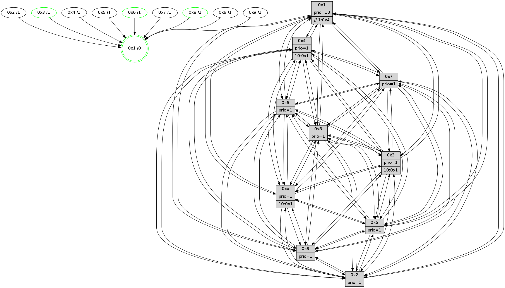

>> << IDX [start] -100 -25 -5 +0 +5 +25 +100 [1030.51577997]
 Previous packets
1025.008844 beacon02(faad) #0 coord=01,02,03,04,05,06,07,0a,09,08 cycle=688.0ms assoc 64 a2 8f
1025.018844 beacon03(faad) #0 coord=01,02,03,04,05,06,07,0a,09,08 cycle=688.0ms assoc 64 d8 c2
1025.028844 beacon04(faad) #0 coord=01,02,03,04,05,06,07,0a,09,08 cycle=688.0ms assoc 64 af 28
1025.038844 beacon05(faad) #0 coord=01,02,03,04,05,06,07,0a,09,08 cycle=688.0ms assoc 64 d5 65
1025.048844 beacon06(faad) #0 coord=01,02,03,04,05,06,07,0a,09,08 cycle=688.0ms assoc 64 5b b2
1025.058844 beacon07(faad) #0 coord=01,02,03,04,05,06,07,0a,09,08 cycle=688.0ms assoc 64 21 ff
1025.068850 beacon0a(faad) #0 coord=01,02,03,04,05,06,07,0a,09,08 cycle=688.0ms assoc 64 50 f4
1025.078848 beacon09(faad) #0 coord=01,02,03,04,05,06,07,0a,09,08 cycle=688.0ms assoc 64 de 23
1025.088850 beacon08(faad) #0 coord=01,02,03,04,05,06,07,0a,09,08 cycle=688.0ms assoc 64 a4 6e
1025.100031 [Hello(2): seq=651 sym=4,5,7,6,3,9,8,10,1 sysInfo=hasWarning stat=4:5,2,9,7/5:8,13,11,3/7:3,8,7,10/6:10,12,15,9/3:6,14,13,6/9:13,3,1,5/8:6,14,11,9/10:10,9,2,10/1:0,14,6,1]
1025.102710 [Hello(5): seq=655 sym=7,6,4,3,1,9,8,10,2 sysInfo=hasWarning stat=7:10,6,9,11/6:12,6,9,0/4:9,4,5,9/3:10,4,14,11/1:4,12,8,1/9:5,10,5,6/8:10,2,2,0/10:2,6,14,6/2:13,9,4,2]
1025.105371 [Hello(1): seq=564 sym=4,2,9,5,10,3,8,6,7 sysInfo=coloring-mode-on,ColoringModeRequestCalled stat=4:11,9,6,2/2:10,6,3,13/9:7,1,2,6/5:14,9,11,6/10:13,15,5,4/3:1,6,6,4/8:15,13,4,1/6:0,6,3,11/7:5,3,4,12]
1025.108127 [Hello(3): seq=655 sym=1,7,6,2,4,8,9,10,5 sysInfo=hasWarning stat=1:12,15,1,0/7:5,4,12,9/6:4,2,13,3/2:14,12,0,12/4:13,7,3,8/8:7,2,12,2/9:6,12,1,12/10:5,13,15,3/5:14,3,9,13]
1025.110961 [Color(3) seq=284 @0:0 prio=1 >10.@1,1.@4,1.@6,1.@7]
1025.115893 [Color(6) seq=287 @0:0 prio=1]
----------------------------------------------------------------------
1025.786992 beacon01(faad) #0 coord=01,02,03,04,05,06,07,0a,09,08 cycle=688.0ms assoc
-- color-indic=1 64 8d bb
1025.796973 beacon02(faad) #0 coord=01,02,03,04,05,06,07,0a,09,08 cycle=688.0ms assoc 64 1e 8a
1025.806974 beacon03(faad) #0 coord=01,02,03,04,05,06,07,0a,09,08 cycle=688.0ms assoc 64 64 c7
1025.816977 beacon04(faad) #0 coord=01,02,03,04,05,06,07,0a,09,08 cycle=688.0ms assoc 64 13 2d
1025.826974 beacon05(faad) #0 coord=01,02,03,04,05,06,07,0a,09,08 cycle=688.0ms assoc 64 69 60
1025.836975 beacon06(faad) #0 coord=01,02,03,04,05,06,07,0a,09,08 cycle=688.0ms assoc 64 e7 b7
1025.846975 beacon07(faad) #0 coord=01,02,03,04,05,06,07,0a,09,08 cycle=688.0ms assoc 64 9d fa
1025.856979 beacon0a(faad) #0 coord=01,02,03,04,05,06,07,0a,09,08 cycle=688.0ms assoc 64 ec f1
1025.866982 beacon09(faad) #0 coord=01,02,03,04,05,06,07,0a,09,08 cycle=688.0ms assoc 64 62 26
1025.876982 beacon08(faad) #0 coord=01,02,03,04,05,06,07,0a,09,08 cycle=688.0ms assoc 64 18 6b
1025.888490 [Hello(10): seq=588 sym=6,2,3,7,5,9,4,1 sysInfo=hasWarning stat=6:9,9,5,4/2:11,1,14,6/3:3,2,12,9/7:10,3,5,3/5:1,5,7,13/9:14,12,6,1/4:5,6,9,7/1:11,15,11,1]
1025.890856 [Hello(4): seq=655 sym=5,7,6,2,3,9,8,10,1 sysInfo= stat=5:1,10,1,13/7:15,8,2,9/6:15,12,14,10/2:3,9,11,11/3:6,10,14,9/9:13,15,7,9/8:4,1,5,3/10:11,15,8,11/1:12,0,7,1]
1025.893409 [Hello(7): seq=655 sym=2,3,5,6,4,8,9,10,1 sysInfo=hasWarning stat=2:9,3,11,14/3:4,0,6,13/5:4,4,9,1/6:6,1,7,7/4:8,14,3,2/8:15,7,5,1/9:6,7,6,0/10:13,3,12,3/1:4,7,7,0]
1025.897385 [Hello(9): seq=599 sym=2,5,3,4,7,6,8,10,1 sysInfo=hasWarning stat=2:8,12,2,4/5:15,12,15,4/3:9,13,1,13/4:14,4,13,7/7:11,15,1,10/6:11,8,9,9/8:10,9,4,3/10:1,10,5,2/1:0,15,7,1]
1025.902640 [Hello(8): seq=599 sym=5,2,3,4,9,6,7,10,1 sysInfo=hasWarning stat=5:7,12,8,15/2:6,6,1,6/3:5,4,4,13/4:0,5,0,9/9:14,15,8,2/6:10,10,3,11/7:10,5,6,2/10:8,8,10,2/1:12,5,4,0]
1025.910749 [STC(1) #0.145 tree-change,inconsistent-stability,stable,to-color d=0]
1025.912374 [Color(1) seq=336 @0:0 prio=10 >>1.@4,1.@6,1.@7]
----------------------------------------------------------------------
1026.575125 beacon01(faad) #0 coord=01,02,03,04,05,06,07,0a,09,08 cycle=688.0ms assoc
-- color-indic=1 64 59 8e
1026.585110 beacon02(faad) #0 coord=01,02,03,04,05,06,07,0a,09,08 cycle=688.0ms assoc 64 ca bf
1026.595106 beacon03(faad) #0 coord=01,02,03,04,05,06,07,0a,09,08 cycle=688.0ms assoc 64 b0 f2
1026.605106 beacon04(faad) #0 coord=01,02,03,04,05,06,07,0a,09,08 cycle=688.0ms assoc 64 c7 18
1026.615108 beacon05(faad) #0 coord=01,02,03,04,05,06,07,0a,09,08 cycle=688.0ms assoc 64 bd 55
1026.625108 beacon06(faad) #0 coord=01,02,03,04,05,06,07,0a,09,08 cycle=688.0ms assoc 64 33 82
1026.635108 beacon07(faad) #0 coord=01,02,03,04,05,06,07,0a,09,08 cycle=688.0ms assoc 64 49 cf
1026.645112 beacon0a(faad) #0 coord=01,02,03,04,05,06,07,0a,09,08 cycle=688.0ms assoc 64 38 c4
1026.655113 beacon09(faad) #0 coord=01,02,03,04,05,06,07,0a,09,08 cycle=688.0ms assoc 64 b6 13
1026.665113 beacon08(faad) #0 coord=01,02,03,04,05,06,07,0a,09,08 cycle=688.0ms assoc 64 cc 5e
1026.679081 [STC(8)->1 #0.145 tree-change,inconsistent-stability,stable,to-color d=1]
1026.680459 [STC(4)->1 #0.145 tree-change,inconsistent-stability,to-color d=1]
1026.681978 [TreeStatus(8)-.->1 #0.145 tree-change,inconsistent-stability,stable child=1]
1026.683351 [Hello(1): seq=565 sym=4,2,9,5,10,3,8,6,7 sysInfo=coloring-mode-on,ColoringModeRequestCalled stat=4:12,9,6,2/2:10,6,3,13/9:7,1,2,6/5:14,9,11,6/10:14,15,5,4/3:2,7,6,4/8:15,13,4,1/6:0,7,3,11/7:5,3,4,12]
1026.686026 [Hello(6): seq=656 sym=2,3,5,4,7,9,8,10,1 sysInfo= stat=2:5,10,3,2/3:5,0,4,10/5:10,1,3,15/4:13,0,12,3/7:2,2,3,8/9:0,5,5,6/8:12,13,1,3/10:13,10,9,12/1:13,8,7,1]
1026.689421 [STC(10)->1 #0.145 tree-change,inconsistent-stability,to-color d=1]
1026.690751 [STC(6)->1 #0.145 tree-change,inconsistent-stability,stable,to-color d=1]
1026.693403 [STC(9)->1 #0.145 tree-change,inconsistent-stability,to-color d=1]
1026.694633 [Color(6) seq=288 @0:0 prio=1]
1026.697257 [Hello(3): seq=656 sym=1,7,6,2,4,8,9,10,5 sysInfo=hasWarning stat=1:12,0,2,0/7:6,4,12,9/6:4,3,13,3/2:15,12,0,12/4:14,7,3,8/8:8,2,12,2/9:7,12,1,12/10:6,13,15,3/5:15,3,9,13]
1026.699887 [STC(5)->1 #0.145 to-color d=1]
1026.701339 [STC(3)->1 #0.145 tree-change,inconsistent-stability,stable,to-color d=1]
1026.702962 [Color(3) seq=285 @0:0 prio=1 >10.@1,1.@4,1.@6,1.@7]
----------------------------------------------------------------------
1027.363255 beacon01(faad) #0 coord=01,02,03,04,05,06,07,0a,09,08 cycle=688.0ms assoc
-- color-indic=1 64 e5 8b
1027.373237 beacon02(faad) #0 coord=01,02,03,04,05,06,07,0a,09,08 cycle=688.0ms assoc 64 76 ba
1027.383237 beacon03(faad) #0 coord=01,02,03,04,05,06,07,0a,09,08 cycle=688.0ms assoc 64 0c f7
1027.393236 beacon04(faad) #0 coord=01,02,03,04,05,06,07,0a,09,08 cycle=688.0ms assoc 64 7b 1d
1027.403238 beacon05(faad) #0 coord=01,02,03,04,05,06,07,0a,09,08 cycle=688.0ms assoc 64 01 50
1027.413236 beacon06(faad) #0 coord=01,02,03,04,05,06,07,0a,09,08 cycle=688.0ms assoc 64 8f 87
1027.423237 beacon07(faad) #0 coord=01,02,03,04,05,06,07,0a,09,08 cycle=688.0ms assoc 64 f5 ca
1027.433243 beacon0a(faad) #0 coord=01,02,03,04,05,06,07,0a,09,08 cycle=688.0ms assoc 64 84 c1
1027.443244 beacon09(faad) #0 coord=01,02,03,04,05,06,07,0a,09,08 cycle=688.0ms assoc 64 0a 16
1027.453242 beacon08(faad) #0 coord=01,02,03,04,05,06,07,0a,09,08 cycle=688.0ms assoc 64 70 5b
1027.464418 [Hello(10): seq=589 sym=6,2,3,8,7,5,9,4,1 sysInfo=hasWarning stat=6:9,10,6,4/2:11,1,14,6/3:4,3,13,9/8:0,0,0,0/7:11,3,6,3/5:1,5,8,13/9:15,12,7,1/4:6,6,9,7/1:11,0,12,1]
1027.468705 [Hello(7): seq=656 sym=2,3,5,6,4,8,9,10,1 sysInfo=hasWarning stat=2:9,3,11,14/3:5,1,7,13/5:4,4,10,1/6:6,2,7,7/4:8,14,3,2/8:0,7,5,1/9:7,7,7,0/10:13,3,12,3/1:4,8,8,0]
1027.472489 [Color(1) seq=337 @0:0 prio=10 >>1.@4,1.@6,1.@7]
1027.478070 [Hello(9): seq=600 sym=2,5,3,4,7,6,8,10,1 sysInfo=hasWarning stat=2:8,12,2,4/5:15,12,0,4/3:10,14,2,13/4:14,4,13,7/7:11,15,1,10/6:11,9,9,9/8:11,9,4,3/10:1,10,5,2/1:0,0,8,1]
1027.481901 [Hello(4): seq=656 sym=5,7,6,2,3,9,8,10,1 sysInfo= stat=5:1,10,2,13/7:0,8,2,9/6:0,13,15,10/2:3,9,12,11/3:7,11,15,9/9:14,15,8,9/8:5,1,5,4/10:11,15,9,11/1:13,1,8,1]
----------------------------------------------------------------------
1028.151386 beacon01(faad) #0 coord=01,02,03,04,05,06,07,0a,09,08 cycle=688.0ms assoc
-- color-indic=1 64 21 85
1028.161368 beacon02(faad) #0 coord=01,02,03,04,05,06,07,0a,09,08 cycle=688.0ms assoc 64 b2 b4
1028.171369 beacon03(faad) #0 coord=01,02,03,04,05,06,07,0a,09,08 cycle=688.0ms assoc 64 c8 f9
1028.181371 beacon04(faad) #0 coord=01,02,03,04,05,06,07,0a,09,08 cycle=688.0ms assoc 64 bf 13
1028.191369 beacon05(faad) #0 coord=01,02,03,04,05,06,07,0a,09,08 cycle=688.0ms assoc 64 c5 5e
1028.201370 beacon06(faad) #0 coord=01,02,03,04,05,06,07,0a,09,08 cycle=688.0ms assoc 64 4b 89
1028.211369 beacon07(faad) #0 coord=01,02,03,04,05,06,07,0a,09,08 cycle=688.0ms assoc 64 31 c4
1028.221375 beacon0a(faad) #0 coord=01,02,03,04,05,06,07,0a,09,08 cycle=688.0ms assoc 64 40 cf
1028.231373 beacon09(faad) #0 coord=01,02,03,04,05,06,07,0a,09,08 cycle=688.0ms assoc 64 ce 18
1028.241375 beacon08(faad) #0 coord=01,02,03,04,05,06,07,0a,09,08 cycle=688.0ms assoc 64 b4 55
1028.252317 [Hello(1): seq=566 sym=4,2,9,5,10,3,8,6,7 sysInfo=coloring-mode-on,ColoringModeRequestCalled stat=4:13,9,6,2/2:10,6,3,13/9:8,1,3,6/5:14,9,12,6/10:15,15,6,4/3:3,8,7,4/8:15,13,4,1/6:1,8,4,11/7:5,3,5,12]
1028.255233 PARSE ERROR************************
Traceback (most recent call last):
File "PacketAnalysis.py", line 167, in showOperaPacket
structPacket = OperaPacketParse.parsePacket(rawPacket)
File "../../pkg-python/HipSens/Core/OperaPacketParse.py", line 461, in parsePacket
return parseHelloMessage(data)
File "../../pkg-python/HipSens/Core/OperaPacketParse.py", line 127, in parseHelloMessage
assert struct.calcsize("H")*len(neighAddrList) == len(linkList)
AssertionError
48 34 05 00 02 91 00 02 02 12 07 00 06 00 04 00 03 00 01 00 09 00 08 00 0a 00 02 00 53 04 00 02 00 00 4c 12 b9 6c 09 7c 95 4b bf 6a 19 e5 65 a7 02 2b 6e 63 24 9d 4c db
1028.258585 [Hello(6): seq=657 sym=2,3,5,4,7,9,8,10,1 sysInfo= stat=2:6,10,3,2/3:6,1,5,10/5:10,1,4,15/4:14,0,13,3/7:3,2,3,8/9:1,5,5,6/8:12,13,2,3/10:14,10,9,12/1:13,9,7,1]
1028.261094 [Hello(3): seq=657 sym=1,7,6,2,4,8,9,10,5 sysInfo=hasWarning stat=1:12,1,2,0/7:7,4,12,9/6:4,3,13,3/2:0,12,0,12/4:15,7,3,8/8:8,2,13,2/9:8,12,1,12/10:7,13,15,3/5:15,3,9,13]
1028.264895 [Color(3) seq=286 @0:0 prio=1 >10.@1,1.@4,1.@6,1.@7]
1028.266763 [Color(8) seq=279 @0:0 prio=1]
1028.271101 [Color(6) seq=289 @0:0 prio=1]
1028.273317 [Hello(2): seq=653 sym=4,5,7,6,3,9,8,10,1 sysInfo=hasWarning stat=4:7,2,9,7/5:9,13,12,3/7:5,8,7,10/6:10,14,15,9/3:7,0,14,6/9:15,3,2,5/8:7,14,11,9/10:12,9,2,10/1:1,0,7,1]
----------------------------------------------------------------------
1028.939518 beacon01(faad) #0 coord=01,02,03,04,05,06,07,0a,09,08 cycle=688.0ms assoc
-- color-indic=1 64 9d 80
1028.949500 beacon02(faad) #0 coord=01,02,03,04,05,06,07,0a,09,08 cycle=688.0ms assoc 64 0e b1
1028.959499 beacon03(faad) #0 coord=01,02,03,04,05,06,07,0a,09,08 cycle=688.0ms assoc 64 74 fc
1028.969500 beacon04(faad) #0 coord=01,02,03,04,05,06,07,0a,09,08 cycle=688.0ms assoc 64 03 16
1028.979502 beacon05(faad) #0 coord=01,02,03,04,05,06,07,0a,09,08 cycle=688.0ms assoc 64 79 5b
1028.989502 beacon06(faad) #0 coord=01,02,03,04,05,06,07,0a,09,08 cycle=688.0ms assoc 64 f7 8c
1028.999503 beacon07(faad) #0 coord=01,02,03,04,05,06,07,0a,09,08 cycle=688.0ms assoc 64 8d c1
1029.009506 beacon0a(faad) #0 coord=01,02,03,04,05,06,07,0a,09,08 cycle=688.0ms assoc 64 fc ca
1029.019506 beacon09(faad) #0 coord=01,02,03,04,05,06,07,0a,09,08 cycle=688.0ms assoc 64 72 1d
1029.029507 beacon08(faad) #0 coord=01,02,03,04,05,06,07,0a,09,08 cycle=688.0ms assoc 64 08 50
1029.040740 [Hello(8): seq=601 sym=5,2,3,4,9,6,7,10,1 sysInfo=hasWarning stat=5:7,12,9,15/2:7,6,2,6/3:6,5,5,13/4:1,5,0,9/9:15,15,9,2/6:11,12,4,11/7:11,5,6,2/10:8,8,11,2/1:14,7,5,0]
1029.043992 [Hello(4): seq=657 sym=5,7,6,2,3,9,8,10,1 sysInfo= stat=5:2,10,2,13/7:0,8,2,9/6:1,14,15,10/2:4,9,12,11/3:8,12,15,9/9:14,15,8,9/8:5,2,5,4/10:11,15,9,11/1:14,1,8,1]
1029.048422 [Hello(7): seq=657 sym=2,3,5,6,4,8,9,10,1 sysInfo=hasWarning stat=2:10,3,11,14/3:6,2,7,13/5:5,4,10,1/6:7,3,7,7/4:9,14,3,2/8:0,8,5,1/9:8,7,7,0/10:13,3,12,3/1:5,9,8,0]
1029.051304 [Hello(9): seq=601 sym=2,5,3,4,7,6,8,10,1 sysInfo=hasWarning stat=2:9,12,2,4/5:0,12,0,4/3:11,15,2,13/4:15,4,13,7/7:11,15,1,10/6:12,10,9,9/8:11,10,4,3/10:1,10,5,2/1:1,0,8,1]
1029.054203 [Hello(10): seq=590 sym=6,2,3,8,7,5,9,4,1 sysInfo=hasWarning stat=6:10,11,6,4/2:12,1,14,6/3:5,4,13,9/8:0,1,0,0/7:12,3,6,3/5:2,5,8,13/9:0,12,7,1/4:7,6,9,7/1:12,1,12,1]
1029.058950 [Color(1) seq=338 @0:0 prio=10 >>1.@4,1.@6,1.@7]
----------------------------------------------------------------------
1029.727649 beacon01(faad) #0 coord=01,02,03,04,05,06,07,0a,09,08 cycle=688.0ms assoc
-- color-indic=1 64 a9 98
1029.737632 beacon02(faad) #0 coord=01,02,03,04,05,06,07,0a,09,08 cycle=688.0ms assoc 64 3a a9
1029.747630 beacon03(faad) #0 coord=01,02,03,04,05,06,07,0a,09,08 cycle=688.0ms assoc 64 40 e4
1029.757633 beacon04(faad) #0 coord=01,02,03,04,05,06,07,0a,09,08 cycle=688.0ms assoc 64 37 0e
1029.767632 beacon05(faad) #0 coord=01,02,03,04,05,06,07,0a,09,08 cycle=688.0ms assoc 64 4d 43
1029.777631 beacon06(faad) #0 coord=01,02,03,04,05,06,07,0a,09,08 cycle=688.0ms assoc 64 c3 94
1029.787633 beacon07(faad) #0 coord=01,02,03,04,05,06,07,0a,09,08 cycle=688.0ms assoc 64 b9 d9
1029.797637 beacon0a(faad) #0 coord=01,02,03,04,05,06,07,0a,09,08 cycle=688.0ms assoc 64 c8 d2
1029.807637 beacon09(faad) #0 coord=01,02,03,04,05,06,07,0a,09,08 cycle=688.0ms assoc 64 46 05
1029.817637 beacon08(faad) #0 coord=01,02,03,04,05,06,07,0a,09,08 cycle=688.0ms assoc 64 3c 48
1029.829436 [Hello(2): seq=654 sym=4,5,7,6,3,9,8,10,1 sysInfo=hasWarning stat=4:8,2,9,7/5:9,13,12,3/7:6,8,7,10/6:10,14,15,9/3:7,0,14,6/9:0,3,2,5/8:8,14,11,9/10:13,9,2,10/1:1,1,7,1]
1029.831956 [Hello(5): seq=658 sym=7,6,4,3,1,9,8,10,2 sysInfo=hasWarning stat=7:13,6,9,11/6:13,8,9,0/4:12,4,5,9/3:11,7,15,11/1:5,15,9,1/9:8,10,5,6/8:12,3,2,0/10:4,6,14,6/2:14,9,4,2]
1029.835005 [Hello(3): seq=658 sym=1,7,6,2,4,8,9,10,5 sysInfo=hasWarning stat=1:13,2,2,0/7:8,4,12,9/6:4,4,13,3/2:1,12,0,12/4:0,7,3,8/8:9,3,13,2/9:9,12,1,12/10:8,13,15,3/5:0,3,9,13]
1029.838157 [Color(3) seq=287 @0:0 prio=1 >10.@1,1.@4,1.@6,1.@7]
1029.841201 [Hello(6): seq=658 sym=2,3,5,4,7,9,8,10,1 sysInfo= stat=2:7,10,3,2/3:6,1,5,10/5:11,1,4,15/4:15,0,13,3/7:4,2,3,8/9:2,5,5,6/8:13,13,2,3/10:15,10,9,12/1:14,10,7,1]
1029.844035 [Color(6) seq=290 @0:0 prio=1]
1029.845365 [Color(8) seq=280 @0:0 prio=1]
1029.847696 [STC(1) #0.146 tree-change,inconsistent-stability,stable,to-color d=0]